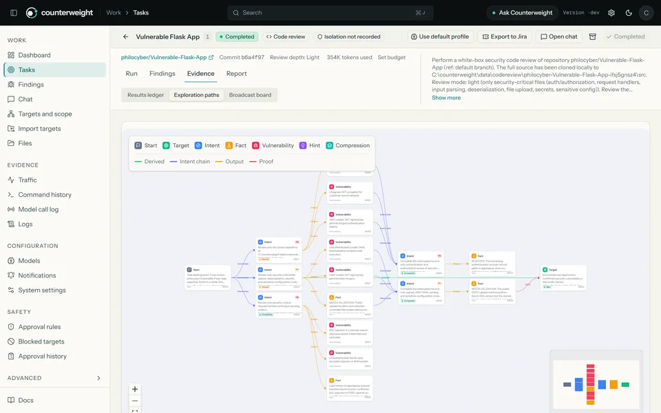
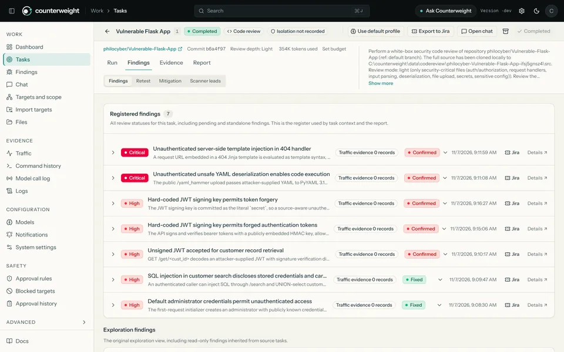
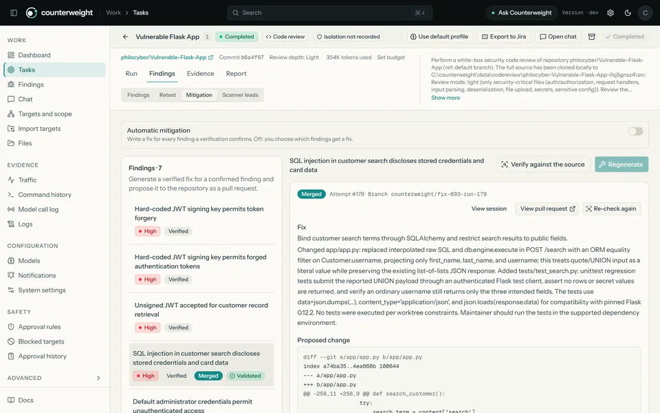
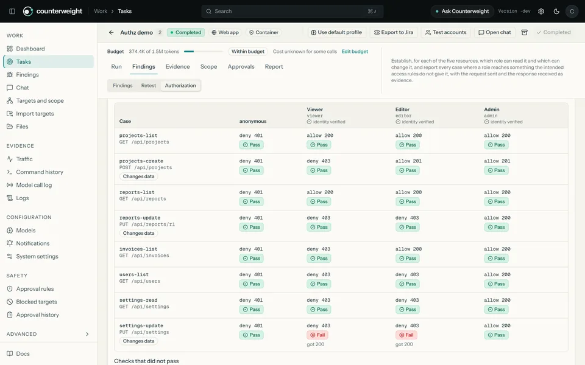
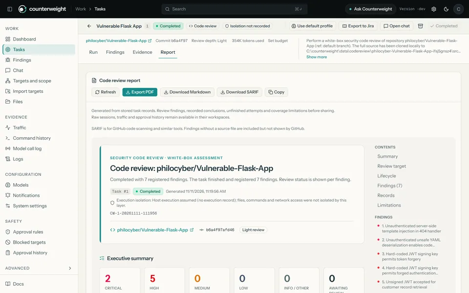

You approve the risky steps
Scope, deny rules and an approval gate hold a command until a person decides. A code review never executes the repository’s code, and its agents have no shell or network tools at all.
How the approval gate works →open sourceself-hostedAGPL-3.0
Attackers now automate with AI, and most teams have no red team to answer with. Counterweight puts the same class of tooling on the defenders’ side: agents that test your applications and review your code, with a person in command.
Runs on your machines, with the model you choose. No hosted service, no telemetry, no license fee.
A serious attack used to be expensive. It took skilled people and patience, and that cost quietly protected everyone who was not worth the effort. That protection is gone, and the organizations least able to respond are paying for it.
A counterweight is the mass that keeps a lopsided system from tipping over. It does not add force for its own sake. It restores balance.
Counterweight does not pretend to end the asymmetry. It puts a weight on the defenders’ side that grows with the same technology attackers use, so a two-person IT team, a clinic, a school or a growing startup can test its own systems with evidence and fix what matters first. Read the mission →
Point it at a web application, an API, a network or a source repository. A planner and parallel workers explore it step by step; you see every step, and nothing counts until it is proven.





A tool that runs commands against your systems has to earn its place. Every claim below points at the document or the code that lets you check it yourself.
Scope, deny rules and an approval gate hold a command until a person decides. A code review never executes the repository’s code, and its agents have no shell or network tools at all.
How the approval gate works →No hosted service and no telemetry. Use a hosted model, a gateway, or a model on your own hardware; with a local model nothing leaves your network.
Choosing a model →Agent file access is limited to each task, stored credentials are encrypted and write-only, sessions are revocable, and a per-task budget stops runaway spend.
The security model →What was verified, how, and what was not is written down next to the code. AI output can be wrong: review the evidence before acting on a finding, and every fix before merging it.
Verification and limits →Use Counterweight only on systems and code you own or are explicitly authorized, in writing, to test. Responsible use
Well-funded security teams can keep up. This is for everyone else: the people who carry security on top of another job.
A two-person IT team, a clinic, a school, a nonprofit. Review the code you ship and the application you expose, and get a short list of what to fix first, with the fix attached.
Run a review on every pull request, retest after each fix and hand auditors a report they can read. Not an annual audit that ages in a drawer, but a practice that repeats release after release.
Commands, approvals and every step an agent takes are recorded. Bring your own model, write your own skills, drive it from your coding agent, and study how each conclusion was reached.
Counterweight is free software under AGPL-3.0. Nobody can close it, and improvements made to a hosted copy must be published, so the weight stays on the defenders’ side.
What the agents know lives in 76 skills written as plain Markdown: you can read exactly what they will try, correct it, and add what your stack needs. Defense improves when the people doing it share what works.
One installer, a first-run checklist and a guided model setup. The first build compiles from source and takes several minutes; later starts take seconds.
git clone https://github.com/Philocyber/counterweight.git
cd counterweight
./install.sh
Choose the all-in-Docker option. The installer checks Docker,
creates a local HTTPS certificate, writes a private
.env and starts the stack.
Open https://localhost:8787, paste the one-time
setup token the installer printed and choose a password. Then
connect a model: hosted, through a gateway, or running on your
own hardware.
Review a GitHub repository, or add the hosts in scope and test a web application. The dashboard’s Get started card walks you through it and ticks the steps off.
Prefer no containers? Two native options run with PostgreSQL only. All installation paths → A complete example engagement →
Trust starts with the limits. These are checkable against the repository.
Counterweight is a standalone derivative of
ARTEX
at upstream commit 160fe13, licensed AGPL-3.0.
Agent capabilities use the
norma
SDK; asset sync draws on
ScopeSentry.
Screenshots show demo assessments of intentionally vulnerable training targets, not scans of live systems. Type is self-hosted Instrument Sans and Geist Mono (SIL Open Font License).